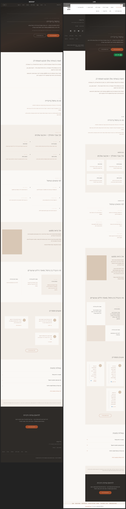
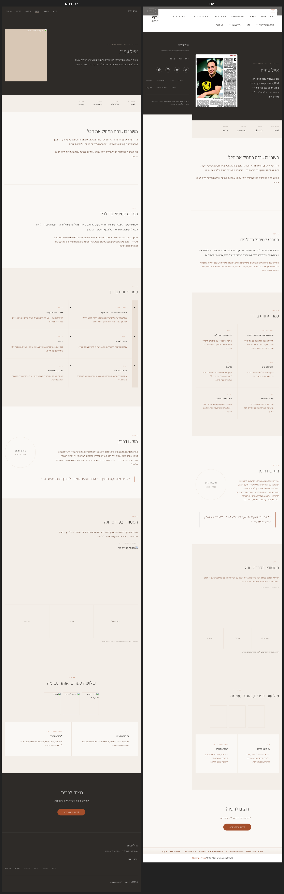
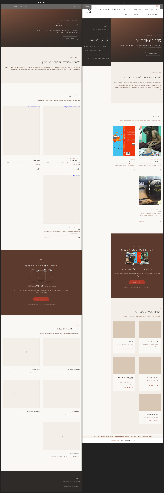
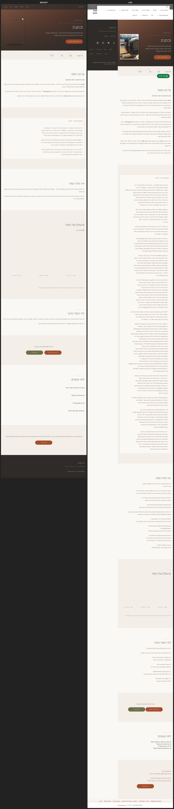
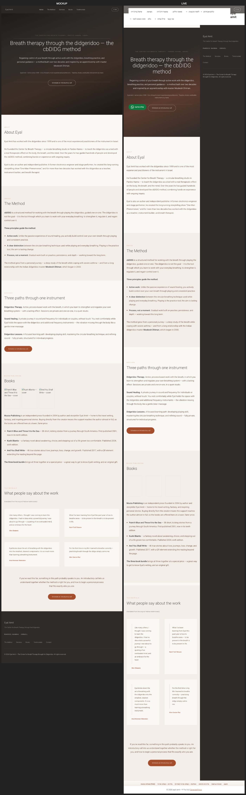

Visual Fidelity Audit — WP-W2-10 (mockup vs live)
🔴 P0 שיטתי בכל העמודים: כותרת GeneratePress הלבנה (תפריט legacy + אייקוני סושיאל, ~182px) נטענת מעל ea-topnav — ניווט כפול שלא קיים במוקאפ. צריך ניווט אחד בלבד.
A — Service (/treatment)

B — Editorial (/about)
בנוסף ל-P0: קומפוזיציית ה-hero שונה — במוקאפ הפורטרט+השם משולבים ב-hero כהה אחד; בחי הם מפוצלים (הפורטרט האמיתי כן נטען בכרטיס נפרד).

E — Books archive (/books)
תואם טוב + הכריכות האמיתיות נטענות (טוב יותר מהמוקאפ שהיה placeholder). נותר רק ה-P0 של הכותרת.

E — Book detail (/books/vekatavta)
החי ארוך בהרבה מהמוקאפ — נטען הרבה יותר טקסט גוף (excerpt/תוכן). לבדוק אם זה תקין או תוכן עודף.

F — EN landing (/en)
ה-P0 חמור במיוחד כאן: כותרת GP בעברית RTL מעל עמוד אנגלי LTR.
